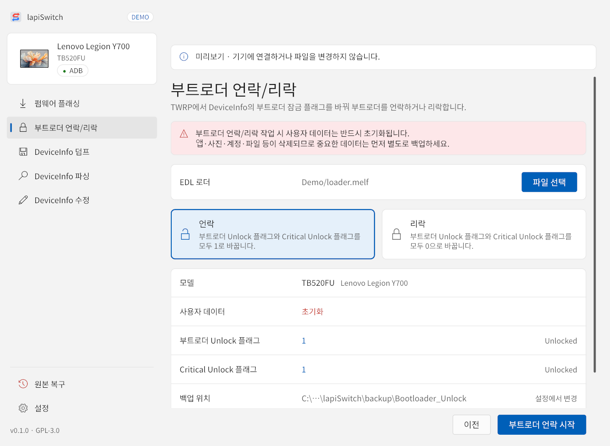
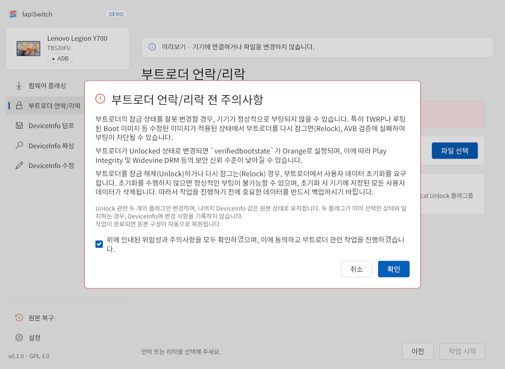
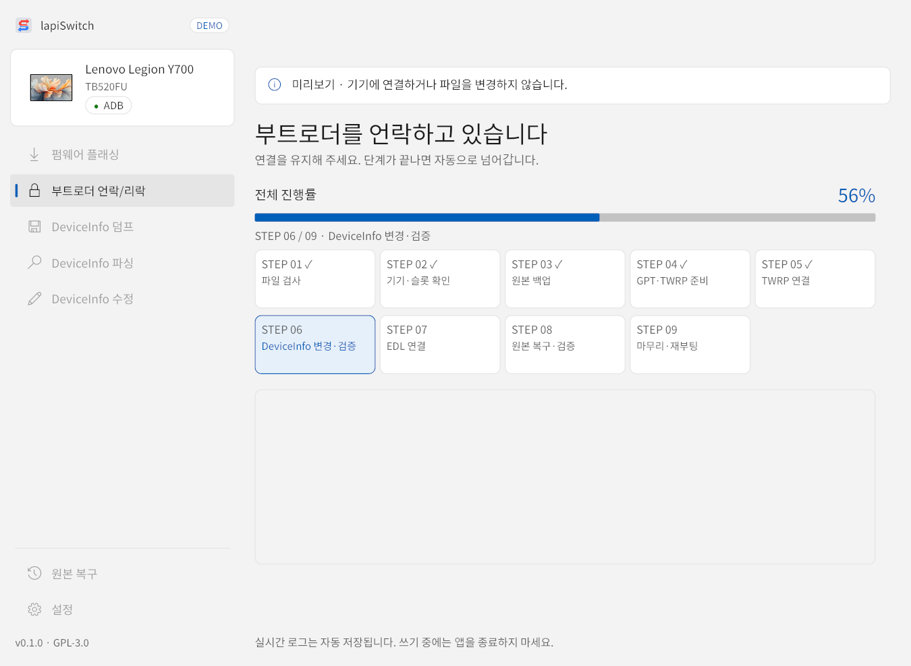

TWRP에서 DeviceInfo의 부트로더 잠금 플래그 두 개(is_unlocked, is_unlock_critical)만 바꿔 부트로더를 언락하거나 리락합니다. 나머지 DeviceInfo 값은 그대로 두고, 작업이 끝나면 원본 구성을 자동으로 되돌립니다.

- 메뉴를 누르면 먼저 주의사항 창이 나옵니다. 내용을 읽고 동의를 체크한 뒤 확인을 누릅니다.
- 파일 선택으로 EDL 로더를 고릅니다.
- 언락(두 플래그를 1로) 또는 리락(두 플래그를 0으로)을 고릅니다.
- 모델, 사용자 데이터(초기화), 바뀔 플래그 값, 백업 위치(
backup\Bootloader_Unlock또는Bootloader_Relock)를 확인하고 부트로더 언락 시작(또는 리락 시작)을 누릅니다.

언락·리락 전에 알아 둘 것
- 언락이나 리락을 하면 부트로더가 사용자 데이터 초기화를 요구하므로 데이터가 모두 삭제됩니다.
- 언락하면
verifiedbootstate가 Orange가 되어 Play Integrity·Widevine DRM 등의 보안 신뢰 수준이 낮아질 수 있습니다. - TWRP나 루팅된 Boot 이미지처럼 수정된 이미지가 있는 상태에서 리락하면 AVB 검증에 실패해 부팅되지 않을 수 있습니다. 리락 전에 순정 이미지로 되돌리세요.
- 두 플래그가 이미 고른 상태와 같으면 DeviceInfo에 쓰지 않습니다.
진행은 펌웨어 설치를 뺀 9단계입니다(진행 화면).
